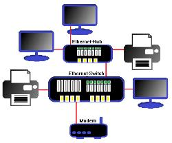

Ethernet
Es una familia de tecnologías para redes de computadoras cableadas, ampliamente utilizada en redes de área local (LAN), redes de área metropolitana (MAN) y, en menor medida, redes de área amplia (WAN). Se introdujo comercialmente en 1980 y se estandarizó por primera vez en 1983 como IEEE 802.3.
